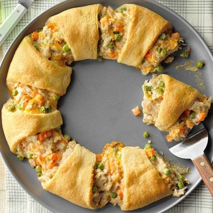

Tuna Crescent Ring
What is Tuna Crescent Ring?
This Tuna Crescent Ring is stuffed with super delicious high quality tuna packed with healthy and flavorful ingredients. Perfect for a party or as an elegant appetizer or meal.
Ingredients
1 tube (8 ounces) refrigerated crescent rolls
1 can (12 ounces) albacore white tuna in water
1 cup frozen peas and carrots (about 5 ounces)
1/2 cup shredded cheddar cheese
1/4 cup mayonnaise
1 tablespoon Dijon mustard
1-1/2 teaspoons dried minced onion
1 teaspoon Italian seasoning
Instructions / How to Cook
1. Preheat oven to 375°. Unroll crescent dough and separate into triangles. On an ungreased 12-in. pizza pan, arrange triangles in a ring with points toward the outside and wide ends overlapping. Press overlapping dough to seal.
2. In a small bowl, combine the remaining ingredients. Spoon across wide end of triangles. Fold pointed end of triangles over filling, tucking points under to form a ring (filling will be visible).
3. Bake 15-20 minutes or until golden brown and heated through.